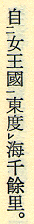
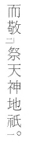
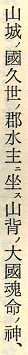
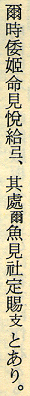
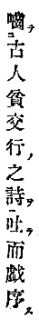

訓点
漢文の字間や行の脇に小書きで添えられる、返り点などの符号や送り仮名を、訓点と呼びます。
訓点は、以下に示す記号を用いて入力してください。
返り点
返り点は、［＃…］のように書いてください。
レ点は、カタカナの「レ」で入力してください。
※記入例の下に、テキスト版をスクリプトで変換して得た、XHTML 版のタグを示します。

記入例
自［＃二］女王國［＃一］東度［＃レ］海千餘里。
自<sub class="kaeriten">二</sub>女王國<sub class="kaeriten">一</sub>東度<sub class="kaeriten">レ</sub>海千餘里。
●返り点の例1。内藤湖南「内藤湖南全集 第七巻」筑摩書房、1976（昭和51）年10月10日第2刷、252ページ
レ点とその他の返り点が組み合わさっている場合は、［＃一レ］、［＃上レ］のように書いてください。
記入例
見［＃二］大人所［＃一レ］敬。
見<sub class="kaeriten">二</sub>大人所<sub class="kaeriten">一レ</sub>敬。
●返り点の例2。内藤湖南「内藤湖南全集 第七巻」筑摩書房、1976（昭和51）年10月10日第2刷、250ページ
複数の漢字を熟語としてまとめて読む際などに、漢字同士を結ぶ記号として使われる竪点（たててん）は、全角のハイフン「‐」で入力してください。
竪点と返り点の記載順は、竪点、返り点の順にしてください。 ← ※これまで、規定していなかった内容です

▲「敬」と「祭」が竪点で結ばれています。
記入例
而敬‐［＃二］祭天神地祇［＃一］。
而敬‐<sub class="kaeriten">二</sub>祭天神地祇<sub class="kaeriten">一</sub>。
●竪点の例。折口信夫「折口信夫全集 4」中央公論社、1995（平成7）年5月10日初版、11ページ
訓点送り仮名
訓点送り仮名は、［＃（…）］のように書いてください。

記入例
山城［＃（ノ）］國久世［＃（ノ）］郡水主［＃（ニ）］坐［＃（ス）］山背［＃（ノ）］大國魂命［＃（ノ）］神、
山城<sup class="okurigana">ノ</sup>國久世<sup class="okurigana">ノ</sup>郡水主<sup class="okurigana">ニ</sup>坐<sup class="okurigana">ス</sup>山背<sup class="okurigana">ノ</sup>大國魂命<sup class="okurigana">ノ</sup>神、
●訓点送り仮名の例1。内藤湖南「内藤湖南全集 第七巻」筑摩書房、1976（昭和51）年10月10日第2刷、267ページ
訓点送り仮名として、漢字（万葉仮名）が用いられている場合も、同様に［＃（…）］の形を用いてください。

記入例
爾時倭姫命見悦給［＃（弖）］、其處［＃（爾）］魚見社定賜［＃（支）］とあり。
爾時倭姫命見悦給<sup class="okurigana">弖</sup>、其處<sup class="okurigana">爾</sup>魚見社定賜<sup class="okurigana">支</sup>とあり。
●訓点送り仮名の例2。内藤湖南「内藤湖南全集 第七巻」筑摩書房、1976（昭和51）年10月10日第2刷、264ページ
返り点と訓点送り仮名の混在
返り点と訓点送り仮名が、漢文文字列の同一の字間の左右に置かれているときは、訓点送り仮名を先、返り点を後に書いてください。

記入例
噛［＃（テ）］［＃二］古人貧交行［＃（ノ）］之詩［＃（ヲ）］［＃一］吐［＃（テ）］而戯序［＃（ス）］
噛<sup class="okurigana">テ</sup><sub class="kaeriten">二</sub>古人貧交行<sup class="okurigana">ノ</sup>之詩<sup class="okurigana">ヲ</sup><sub class="kaeriten">一</sub>吐<sup class="okurigana">テ</sup>而戯序<sup class="okurigana">ス</sup>
●返り点と訓点送り仮名の混在の例。宝井其角「其角全集」聚英閣、1921（大正10）年10月25日発行、本文2ページ
目次にもどる。